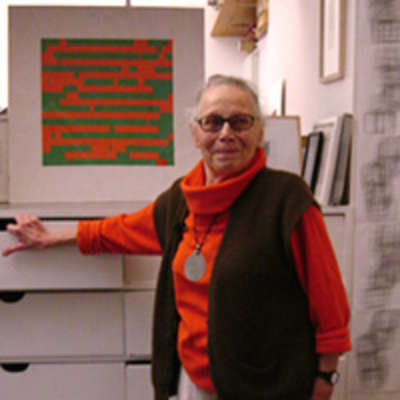
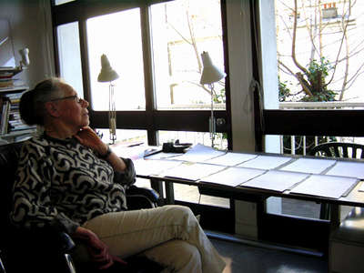

Vera Molnar
Vera Molnar
Vera Molnar was born on January 5th, 1924 (93), in Hungary (Budapest). She grew up there, but eventaully moved there after college at the Budapest College of Fine Arts in 1947. She got married to Francois Molnar in the year 1948. When she had the chance to work on computers, she moved to Rome and was offered a chance to work there to draw art. It wasn't until 1968 when the first computer graphics were designed. After 1968, she spent her time in Paris working on computers.
Vera came up with "Molnart" which is a computer software program that she and her husband developed to help draw. She worked and developed this program between the years 1974 and 1976. She continued to work on her artwork in Paris and became involved in different galleries and became members of CREIAV and CRÉDAC throughout the 1980's and 1990's. In 1985, Molnar took a job at the University of Paris-Sorbornne. She became a professor of Fine Arts, Aestehtics, and Art History. 
At 93, Vera does not do much work anymore. She has had her art displayed all over the world throughout her lifetime, but at this time, she does not do very much. She is fairly elderly, she lives in Paris where she speaks French, and is well set for life due to her numerous amounts of pieces from all over the world. 